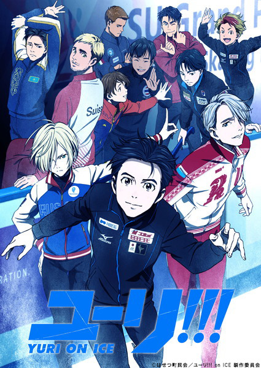

Yuri!! On Ice - Sayo Yamamoto, Mitsurō Kubo

Overview & Recap
Yuri!! On Ice is a figure skating sport anime. Skater Yuri Katsuki is about to retire when he meets skaters Victor Nikiforov and Yuri Plisetsky. They manage to rekindle his competitve fire and so he goes back onto the ice.
Ep i got up to and why i dropped it
I watched until ep 5 and then gave up. its a pretty basic sport anime. i watched a bunch of dub compilations on youtube so ik the plot and story-line so i thought there wasnt really a point in watching anymore.